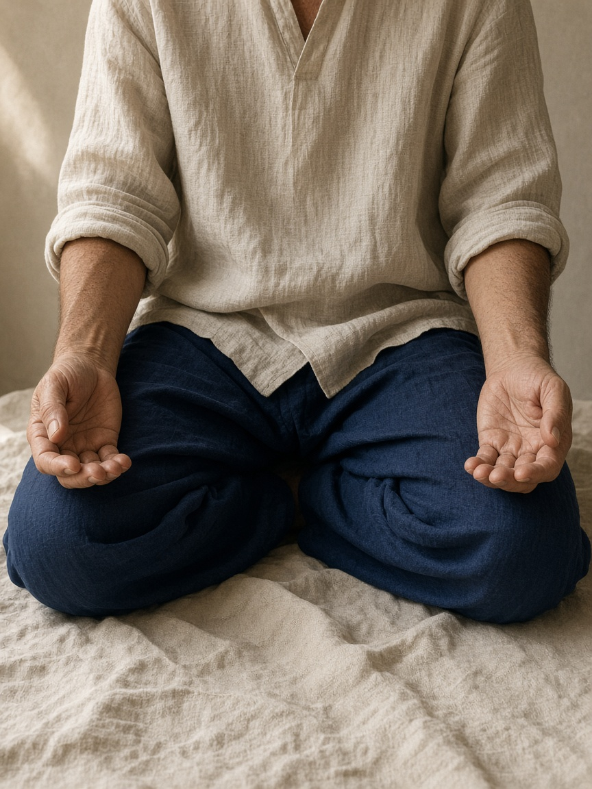
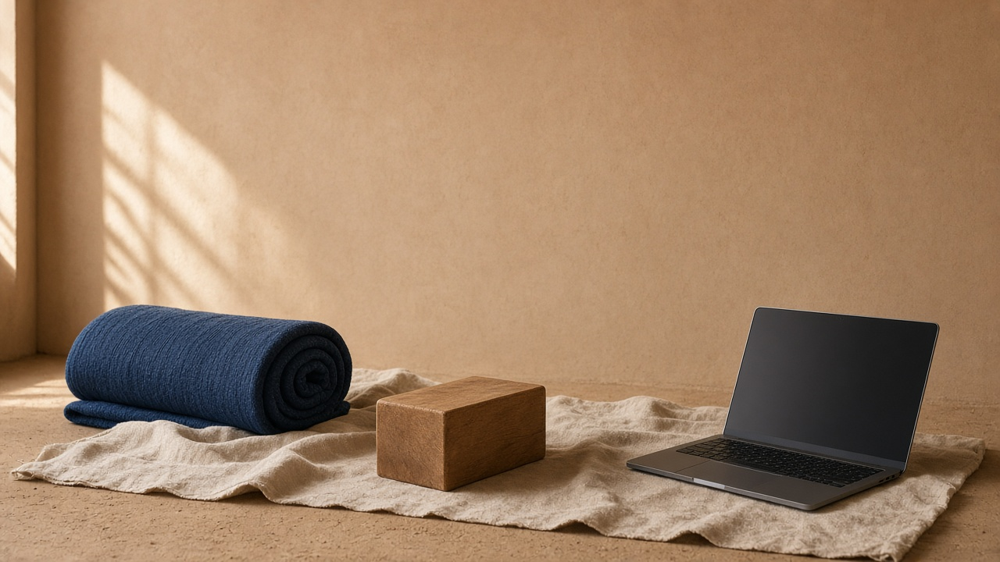
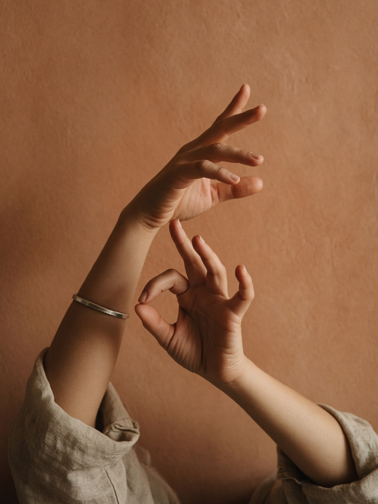
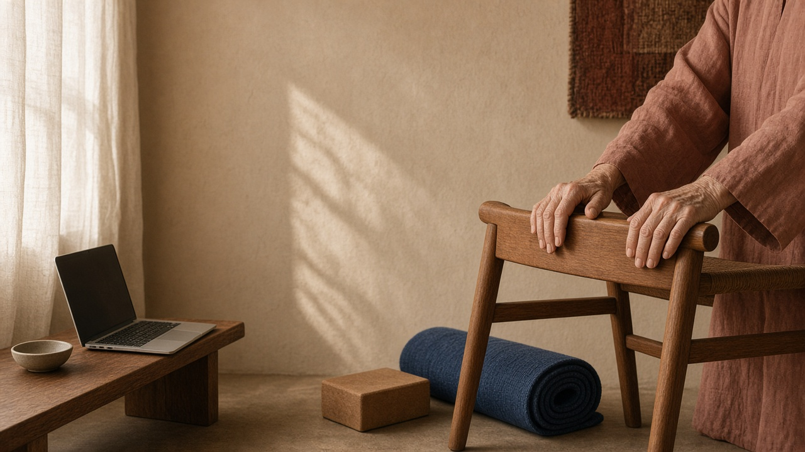

Executivos e executivas sob pressão
Quem decide o dia inteiro e quer uma prática discreta, com horário cedo ou tarde e sem precisar planejar nada.
Yoga Terapia · Programa Morada · Online
Além da conversa, uma prática que trabalha corpo e respiração. Com quem pratica e ensina há 30 anos, de onde você estiver.
Conversar pelo WhatsApp Ver o programa
Conversa inicial gratuita. No máximo 10 vagas.


Quem decide o dia inteiro e quer uma prática discreta, com horário cedo ou tarde e sem precisar planejar nada.

Família e trabalho nas costas, tempo para si quase nenhum. Um espaço seu, com alguém de confiança.

Prática adaptada ao seu corpo, em casa, no seu ritmo, com cadeira, apoios e atenção ao que dói.
Sessões por vídeo, em português, em horário combinado conforme o seu fuso.
Yoga terapia é yoga aplicado à pessoa, não à turma. Nada de aula pronta: cada prática nasce do seu corpo, da sua respiração e da sua rotina.
A tradição é a de Krishnamacharya, a escola da prática personalizada. A yoga terapia é complementar e não promete cura.
Gratuita. Você conta o que busca e vemos se faz sentido.
R$490. Olhar detalhado sobre corpo, respiração e rotina, e o plano da sua prática.
Duas sessões por semana, online, com acompanhamento individual.
30 anos de prática e ensino de yoga, na tradição de Krishnamacharya.
Tudo o que eu faço nasce do yoga: cuidar do corpo, do gesto e de quem faz junto.
Programa Morada
R$ 3.000/mês
Online, 2 sessões por semana, acompanhamento individual. Máximo de 10 vagas.
Conversar pelo WhatsAppConversa inicial
Gratuita
Para nos conhecermos e entender o que você busca.
Sessão de mapeamento
R$ 490
Primeira sessão completa, com plano de prática.
Sessão avulsa
R$ 420
Uma sessão online, sem compromisso mensal.
Pix, cartão ou assinatura mensal.
Sim. Todas as sessões são por vídeo, de onde você estiver, no Brasil ou no exterior.
Não. A prática é desenhada para o seu corpo e a sua rotina, do ponto onde você está.
Não. A yoga terapia é complementar e não promete cura. Ela não substitui acompanhamento de profissionais de saúde.
Pix, cartão ou assinatura mensal. A conversa inicial é gratuita; a sessão de mapeamento custa R$490 e a sessão avulsa R$420.
Sim. Os horários são combinados com você, cedo ou no fim do dia, e a agenda tem no máximo 10 vagas.
Gratuita, sem compromisso. Escolha o canal: